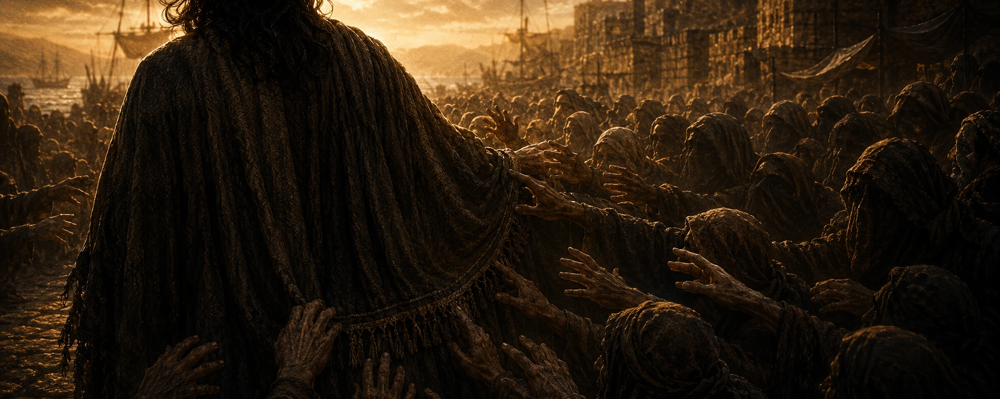

막마다 방식이 다릅니다 — 목소리(서약)·손(매듭)·귀와 손(리듬)·온몸(사슬 끊기)·눈(필름 합체)·팀 협업(점화).
숫자 코드를 찾아 입력하는 자물쇠는 하나도 없습니다.
3개 막(매듭·사슬·점화)은 아예 패드 밖에서 이뤄져, 태블릿 한 명이 독점하는 게 구조적으로 불가능합니다.
막별 미션 — 방식이 전부 다릅니다
막
미션
방식
팀이 하는 일 / 통과
본문
0
승선 서약
목소리·서명
넷이 서약문 이어 낭독 + 마지막 행 제창 + 각자 명부 서명
요 20:31
1
출항 삭구
손(매듭)
각자 매듭 1개 + 함께 돛 올림 → 갑판장 검사 → 십자가 받음
눅 8:22
2
폭풍 침로
리듬
신호수의 빛 길–짧–짧–길을 두드림판에 재현
눅 8:24
3
사슬 끊기
온몸
서로의 종이 사슬을 끊어줌 → 거라사 확인 → 열쇠·기름·부싯돌
눅 8:29
4
그 한 사람
단어
필름 4장 겹쳐 여인 드러냄 → 패드에 믿음
눅 8:48
5
등대 점화
협업·선포
부품 조립 + 「예수를 바라보자」 선포 → 등대지기 점등
눅 9:1
※ 숫자 코드를 찾아 입력하는 자물쇠는 없습니다. 정답·기준은 관리자 창 미션표 탭에 있습니다.
준비물 배치표
준비물
어디에
쓰임
승선 서약문 대형카드 + 명부 + 스탬프
0막 부두 이젤
낭독·제창·서명
삭구 밧줄·지점 라벨 + 매듭 도해 4장
1막 선장실
매듭 → 갑판장 검사
손전등 + 신호수 카드
2막 복도 끝(조명↓)
빛 리듬 발신
종이 리본 4개 + (선택)실물 자물쇠
3막 화물칸
사슬 끊기
반투명 필름 4장
4막 선원실
겹쳐 여인 드러냄
LED·부품·짐 바구니
5막 등대
조립·점화
성경 임무 카드 4장
팀에게 처음부터 지급
p1·p3·p5 성경 찾기
실물 이월: 십자가 / 기름·부싯돌 / 심지
1·3·4막 지급 → 5막 조립
등대 부품
반드시 확인 — 관리자 PIN은 3574입니다. 학생에게 노출되면 관리자 화면에서
모든 코드가 그대로 보이고 전체 해금이 가능합니다. 교사끼리만 공유하세요.
승선 서약문 — 부두 이젤용 대형 카드 (0막 · 목소리)
A3로 확대해 이젤/보면대에 세웁니다. 네 사람이 한 행씩 이어 읽고, 마지막 행은 넷이 함께 외칩니다. 그 뒤 각자 명부에 서명.
승 선 서 약
① 우리는 표적을 보고 놀라기만 하지 않고, ② 기록된 말씀을 읽어 믿기로 합니다. ③ 폭풍이 와도 주님을 바라보며, ④ (다 함께) 믿어 생명 얻으려 이 배에 오릅니다!
— 요한복음 20:31 —
승선 명부 (각자 서명)
이름
나의 고백 한 줄
선장 확인
${'
'.repeat(4)}
출항 삭구 — 매듭 도해 4장 (1막 · 손)
네 지점에 하나씩 붙입니다. 각자 자기 지점의 매듭을 묶고, 갑판장이 이 도해와 대조해 검사합니다. 통과하면 나무 십자가를 건넵니다.
${[['닻 자리','옭매듭 (오버핸드)','밧줄 끝에 고리를 만들어 한 번 통과시켜 조인다'],
['돛 자리','8자 매듭','고리를 두 번 감아 8자 모양으로 통과'],
['계류 자리','clove hitch (말뚝매기)','기둥에 두 번 감아 끝을 끼운다'],
['신호 자리','두 줄 잇기','두 밧줄 끝을 나란히 겹쳐 함께 옭매듭']].map(k=>`
${k[0]}
${k[1]}
🪢
${k[2]}
`).join('')}
갑판장 안내 — 매듭 이름이 정확하지 않아도, 도해처럼 단단히 조여졌는지만 봅니다. 통과 시 십자가 지급(3막 상륙·5막 횃대에 쓰임).
폭풍 침로 — 신호수 카드 (2막 · 귀→손, 교사 전용)
학생에게 보이지 마세요. 복도 끝에서 손전등으로 아래 리듬을 정확히 3회 보냅니다. 팀에서 1명만 받으러 옵니다.
보낼 리듬
▬ ● ● ▬
길게 · 짧게 · 짧게 · 길게
▬ = 손전등을 길게(약 1초) 켠다 / ● = 짧게(툭) 켠다. 사이는 잠깐 끈다.
팀은 이 리듬을 받아적어 패드 두드림판에 그대로 재현합니다(길게 누름=길게, 짧게 누름=짧게). 정답을 말로 알려주지 마세요.
참고 — 게임 내 모스(p4)는 별개
82425 = 눅 8:24-25
사슬 끊기 · 필름 합체 — 준비 안내 (3·4막)
3막 · 사슬 끊기 (거라사)
종이 리본(또는 마스킹테이프 고리) 팀당 4개. 네 사람의 손목·팔을 서로 이어 얽습니다.
자기 사슬은 자기가 못 끊습니다. 한 사람씩 「나를 묶는 것」을 한마디 하면 동료가 그 리본을 손으로 끊어 줍니다(잡아당기기 금지).
넷이 다 풀리고 십자가를 세우면, 거라사 교사가 확인하고 상륙 열쇠·기름통·부싯돌을 건넵니다.
4막 · 필름 합체 (그 한 사람)
반투명 필름(OHP·트레이싱지) 4장. 뒤 페이지의 군중 그림을 4등분해 한 장에 하나씩 인쇄(연하게).
네 사람이 각자 한 장을 들고, 네 모서리를 동시에 맞잡아 창/손전등 빛에 겹쳐 비추면 한 얼굴만 진하게 드러납니다.
그가 「믿음」으로 구원받은 여인 — 패드에 믿음 두 글자를 적습니다. (교사 판정 불필요, 자기검증)
※ 필름 4등분 원본은 뒤 군중 12인 포스터 페이지를 4분할해 쓰면 됩니다.
성경 임무 카드 — 4장 한 묶음
팀에게 처음부터 지급합니다. 성경 담당 한 명이 들고 다니며 찾습니다.
선생님은 쪽수만 알려주고 내용은 말하지 않습니다.
성경 임무 ①
표적을 다 기록하지 않았다고 밝힌 책이 있다. 그 책의 장 번호 두 자리를 가져오라.
승선 명부함 ① ② 자리 · 정답 20
성경 임무 ②
폭풍 속에서 주님이 베개를 베고 주무셨다고 적은 복음서가 있다. 그 장 번호를 가져오라.
항해궤 보조 단서 · 정답 4 (막 4장)
성경 임무 ③
무덤 사이에 거하던 사람이 예수를 만나는 절 번호 두 자리를 가져오라. (누가복음 8장)
보물궤 보조 단서 · 정답 27
성경 임무 ④
소녀의 손을 잡고 “아이야 일어나라” 하신 절의 끝자리를 가져오라. (누가복음 8장)
선원 명부 궤 ④ 자리 · 정답 4 (8:54)
카드에 정답을 적어 두지 마세요. 위 “정답” 표기는 교사 확인용이므로,
학생용으로 인쇄할 때는 그 줄을 가리거나 잘라내고 주십시오.
선생님 상호작용 — "이기면 숫자"가 아닙니다
교사는 채점기가 아니라 장면의 인물입니다. 통과는 숫자 도장이 아니라 실물을 손에 쥐여 주거나 admin으로 처리합니다.
역할
장소
하는 일
주는 것
① 갑판장 (1막)
선장실
넷의 매듭을 도해와 대조 검사. 함께 돛 올리는지 확인
나무 십자가 (실물)
② 신호수 (2막)
복도 끝(조명↓)
손전등으로 길–짧–짧–길 3회 발신. 팀에서 1명만. 정답 발화 금지
리듬 재현 자격
③ 거라사 (3막)
화물칸
서로의 사슬을 다 끊고 십자가 세웠는지 확인
열쇠·기름·부싯돌
교사 배치 — 6명 (최소 5명)
0막 선장 (부두)
서약·서명 확인, 손등 스탬프
1막 갑판장 · 2막 신호수 · 3막 거라사
위 상호작용 3종
4막 유동 선원
필름은 자기검증형 → 상주 불필요, 3·5막 지원
5막 등대지기 (폐회)
짐검사·점등·다음 팀 파송
파송 릴레이 — 클리어한 팀 학생이 다음 팀의 등대지기를 맡으면 교사 1명을 아낍니다. 관리자 PIN 3574는 교사끼리만.
군중 12인 포스터 (p9 · 벽에 붙이세요)
A2로 확대 인쇄해 벽에 붙입니다. 패드에는 답(번호)만 입력합니다.
네 명이 조건을 소리내어 읽으며 함께 후보를 지워 나가는 것이 이 문제의 목적입니다.

옷 가에 손을 대니 — 눅 8:43-44
교사용 — 정답 11번. 조건 4개(뒤로 왔다 / 손을 대었다 / 홀로 있었다 / 머리를 가린 여인)로
소거하면 11번만 남습니다. 5번이 미끼입니다(조건 3개는 맞지만 앞줄). 이 상자는 잘라내고 붙이세요.
거꾸로 쓰인 편지 (p8 · 손거울과 함께 배치)
화물칸 담당 교사가 손거울과 함께 건넵니다. 패드에는 완성된 답만 입력합니다.
새사람이 된 그가 남긴 편지
교사용 — 정답 새사람전하라. 밑줄 글자에 붙은 작은 숫자는 누가복음 8장의 절 번호이고,
작은 것부터 세우면 27새 · 29사 · 33람 · 35전 · 38하 · 39라 입니다. 이 상자는 잘라내고 붙이세요.
레핀 「야이로의 딸을 살리심」 (p10 · A3 벽 인쇄 + 손거울)
A3로 확대 인쇄해 벽에 붙이고 손거울을 함께 둡니다.
아래 계산식은 상하 반전되어 있어 거울로만 읽힙니다.
일리야 레핀, 「야이로의 딸을 살리심」 (1871)
거울에 비춰 읽으라
Ⓐ × Ⓑ − Ⓒ × Ⓓ
Ⓐ
여인이 앓은 햇수 (눅 8:43)
Ⓑ
소녀의 나이 (눅 8:42)
Ⓒ
그림 속에서 타오르고 있는 촛불의 수 (직접 세라)
Ⓓ
방에 들어가도록 허락받은 사람의 수 (눅 8:51)
교사용 — 정답 129. Ⓐ12 Ⓑ12 Ⓒ3 Ⓓ5 → (12×12)−(3×5)=129.
Ⓓ에서 예수님까지 세어 6을 쓰는 실수가 가장 흔합니다(베드로·요한·야고보와 아이의 부모 = 5).
이 상자는 잘라내고 붙이세요.